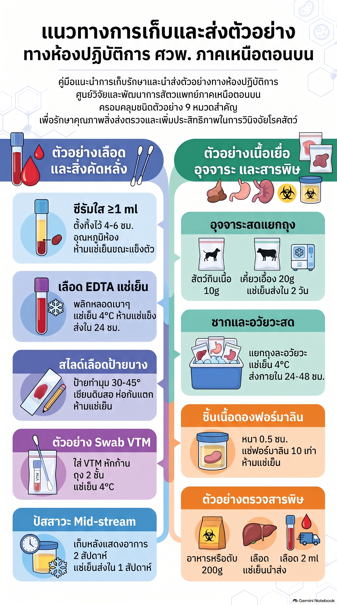
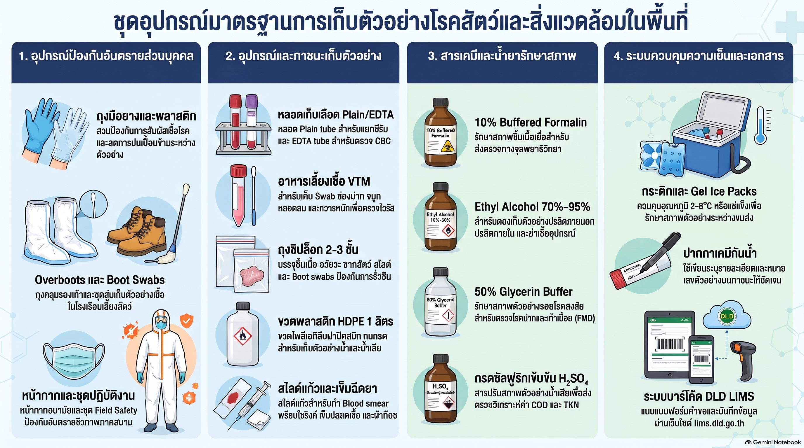
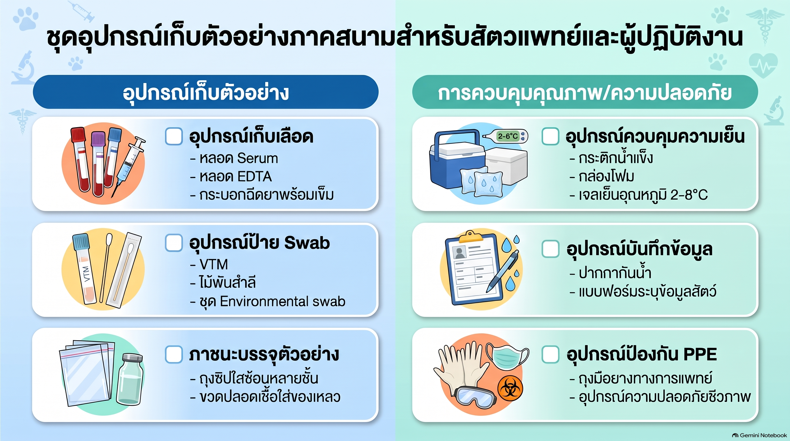

ระบบช่วยคัดกรองโรค (Differential Diagnosis Database) สำหรับสัตวแพทย์ลงพื้นที่
เลือกชนิดสัตว์และระบบอาการที่พบ เพื่อคัดกรองโรคที่มีโอกาสเกิดขึ้น และรวบรวมรายการตัวอย่างที่ต้องเตรียมส่งพร้อมวิธีเก็บรักษา
โรคที่มีโอกาสพบตามเงื่อนไข (0 โรค)
รายการตัวอย่างที่ต้องเตรียมส่ง
รวบรวมและรวมประเภทตัวอย่างชนิดเดียวกัน ตัดเหลือเพียง 1 รายการ พร้อมวิธีเก็บรักษา/ขนส่ง
กรุณาเลือกชนิดสัตว์และอาการด้านซ้าย เพื่อแสดงรายการตัวอย่างที่ต้องเตรียมส่ง...
ประกาศขีดความสามารถห้องปฏิบัติการ ศวพ. ภาคเหนือตอนบน (ครบทั้ง 112 รายการ)
อ้างอิงประกาศ FQS-701-04 ข้อกำหนดชนิดตัวอย่าง การขนส่ง วิธีทดสอบ และระยะเวลาดำเนินการ (TAT)
ลิงก์เอกสารอ้างอิงขีดความสามารถห้องปฏิบัติการ ศวพ. ภาคเหนือตอนบน (NIAH DLD)| ที่ | ห้องปฏิบัติการ | กลุ่มสัตว์ / หมวด | โรค / รายการตรวจ | ชนิดตัวอย่าง | การเก็บรักษา / นำส่ง | วิธีทดสอบ / เครื่องมือ | ระยะเวลา (TAT) | มาตรฐาน ISO 17025 |
|---|
อินโฟกราฟิกภาพประกอบ: แนวทางการเก็บตัวอย่างและชุดอุปกรณ์มาตรฐานภาคสนาม
ภาพประกอบสรุปขั้นตอนการเก็บรักษาตัวอย่าง และชุดอุปกรณ์มาตรฐานการเก็บตัวอย่างสำหรับสัตวแพทย์และผู้ปฏิบัติงาน
แนวทางการเก็บและส่งตัวอย่างทางห้องปฏิบัติการ

คลิกที่รูปภาพเพื่อขยายดูรายละเอียดชัดเจน
ชุดอุปกรณ์มาตรฐานการเก็บตัวอย่างโรคสัตว์และสิ่งแวดล้อม

คลิกที่รูปภาพเพื่อขยายดูรายละเอียดชัดเจน
ชุดอุปกรณ์เก็บตัวอย่างภาคสนามสำหรับสัตวแพทย์

คลิกที่รูปภาพเพื่อขยายดูรายละเอียดชัดเจน
คู่มือการเก็บตัวอย่างทางห้องปฏิบัติการมาตรฐาน (ศวพ. ภาคเหนือตอนบน)
แนวทางปฏิบัติสำหรับสัตวแพทย์ลงพื้นที่ กรณีไม่สามารถระบุโรคจำเพาะได้ ครอบคลุมทุกประเภทสิ่งส่งตรวจ
เกณฑ์นโยบายและเงื่อนไขการรับ-ปฏิเสธตัวอย่าง LIMS
ข้อกำหนดคุณภาพและการปฏิเสธตัวอย่างตามมาตรฐานระบบบริหารคุณภาพ ศวพ. ภาคเหนือตอนบน
คู่มือการเก็บตัวอย่างมาตรฐานคุณภาพสินค้าปศุสัตว์
น้ำนมดิบ, เนื้อสัตว์, ไข่สด, อาหารสัตว์, น้ำผึ้ง และน้ำทิ้งฟาร์ม/โรงฆ่าสัตว์
คู่มือเช็กลิสต์ตรวจสอบตัวอย่างก่อนส่งห้องปฏิบัติการ (Sample Inspection Checklist)
แนวทางการตรวจสอบความถูกต้องของข้อมูล สภาพทางกายภาพ ปริมาณ และการควบคุมอุณหภูมิก่อนนำส่งห้องปฏิบัติการ

คลิกที่รูปภาพเพื่อขยายดูรายละเอียดเช็กลิสต์การตรวจสอบตัวอย่าง
เมื่อตรวจสอบความถูกต้องตามเช็กลิสต์เรียบร้อยแล้ว สามารถเข้าสู่ระบบเพื่อบันทึกข้อมูลตัวอย่างได้ทันที
เข้าสู่ระบบ DLD-LIMS (ระบบสารสนเทศห้องปฏิบัติการ)